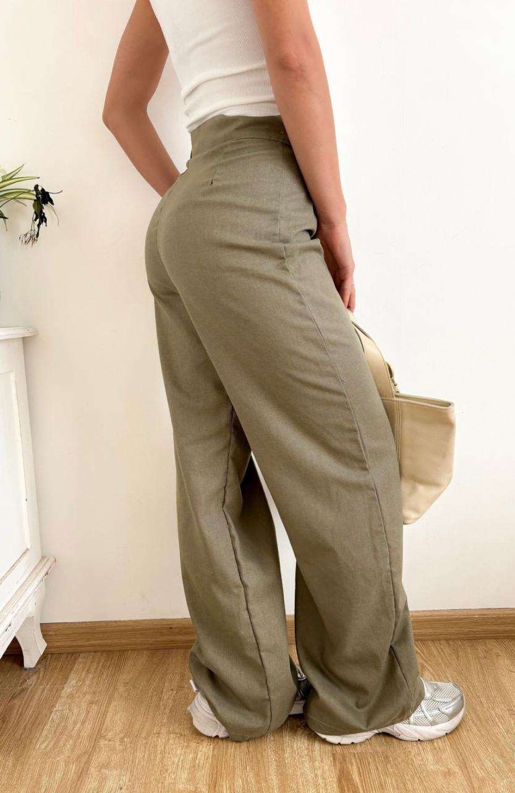

Prendas destacadas

Musculosa blanca
Tejido suave y fresco. Ideal para looks urbanos.

Pantalón verde
Comodidad y estilo en una prenda esencial.

Remera blanca básica
Versátil, minimal y atemporal. 100% algodón.

Remera caramelo
Color neutro que combina con todo. Corte unisex.

Remera marrón
Estilo urbano y relajado, con detalles premium.

Remera negra
Básico esencial. Corte recto y textura suave.

Remera deportiva 46
Estilo street moderno con inspiración retro.

Short con rotura
Casual y cómodo, ideal para el día a día.

Top con strass
Detalle brillante que resalta tu estilo único.

Bermuda de lino
Tejido natural, fresco y sofisticado.